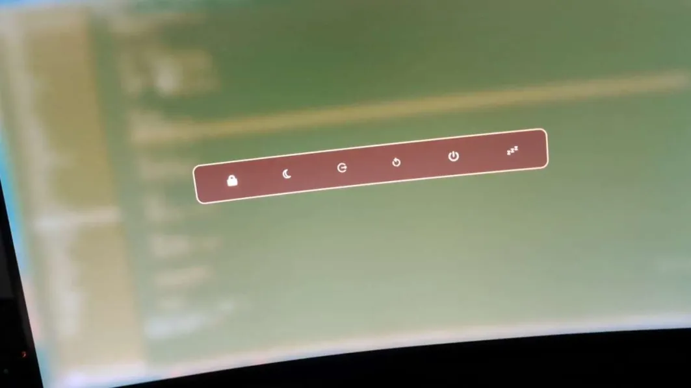

Vraiment pas fifou
Il existe une loi universelle chez les étudiants : on n'a pas d'argent. Évidemment, je suis étudiant, mais je suis débrouillard ! En quatre ans, j'ai réussi à récupérer cinq ordinateurs. Cinq machines vaillantes... Mais aussi âgées qu'un dinosaure. Pourtant, une solution existe pour nous, les geeks prêts à s'arracher quelques cheveux : Linux.
Car le vrai problème n'est pas le matériel (bon, un peu quand même), mais Windows : un système lourd, gourmand, et surtout très curieux. Télémétrie, pubs ciblées, historique d'usage, compte Microsoft obligatoire, collecte de données Wi-Fi et navigation... Une véritable usine à gaz que je ne peux pas ignorer avec un métier en cybersécurité. Deux solutions s'offraient donc à moi : jeter le PC par la fenêtre, ou installer Linux. J'ai choisi la deuxième option. Ma fenêtre m'en remercie encore et ma copine ne m'a pas encore tué.

Un ordinateur vaillant et pas du tout poussiéreux.
Le Grand Saut
Je suis alors parti sur Arch Linux, une distribution minimaliste, ultra personnalisable et connue pour transformer les débutants en experts... Après quelques crises existentielles. Au départ, on n'a rien : un terminal, Internet, la gestion des périphériques. Tout le reste, c'est notre problème.
C'est justement ce que je cherchais : apprendre, comprendre et configurer mon propre environnement. J'ai choisi Hyprland comme interface graphique pour son tiling automatique, qui organise l'écran dès qu'une fenêtre apparaît, et pour sa personnalisation poussée, où tout peut être ajusté. J'ai donc créé un menu d'alimentation avec rofi (solution pour faire des menus), développé ma propre barre de tâches, choisi un thème cohérent, ajusté les couleurs, organisé les fichiers de configuration... Et résolu des crises existentielles, car Linux sans problèmes, ce n'est plus Linux.

Le résultat final : minimaliste et efficace.
Bilan
Ce projet m'a beaucoup apporté. Plutôt que de sortir la carte bleue, j'ai appris à optimiser l'existant. J'y ai gagné en compétences sur Linux, les environnements minimalistes et la configuration système, tout en renforçant ma capacité à résoudre des problèmes. J'ai aussi développé une vraie sensibilité au design : harmonies de couleurs, cohérence visuelle, flat design, neumorphism... Autrement dit, j'ai transformé de vieux PC en machines parfaitement utilisables et magnifiques, tout en apprenant énormément.
Vous pouvez me retrouver sur GitHub pour d'autres projets :